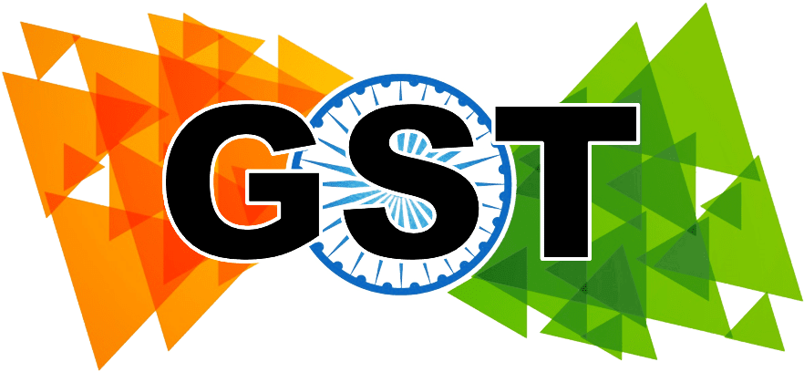
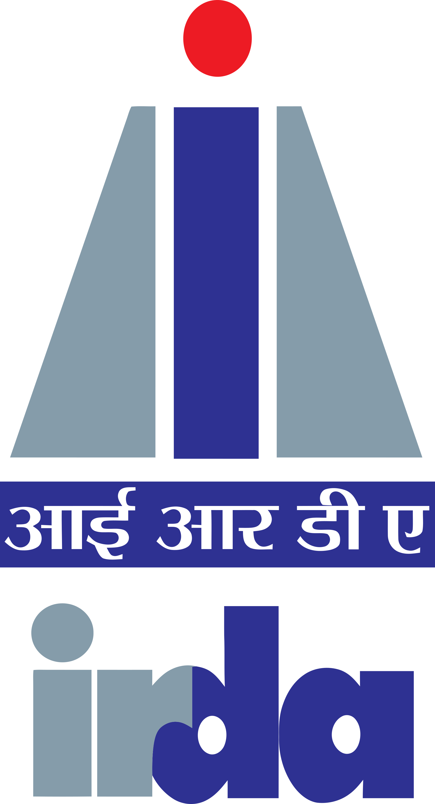

03 · The India stack
First-class connectors to the systems Indian enterprises actually run on.
Not "build your own with our API." Connectors are typed, audited and consent-bound — and they don't leak credentials into the agent context.

GST portal
Regulator · live
MCA21
Regulator · live
Account Aggregator
Consent · live

Tally
Ledger · live
RBI circulars
Regulator · live
DigiLocker
Identity · beta
CK
CKYC
Identity · beta
UPI / NPCI
Payments · beta
SEBI feeds
Regulator · beta

IRDAI
Regulator · beta
Zoho Books
Ledger · live
BUSY / Marg
Ledger · roadmap
Salesforce
CRM · live

Slack
Collab · live
Confluence
Wiki · live
Snowflake
Warehouse · live

Google Drive
Files · live

SharePoint
Files · live